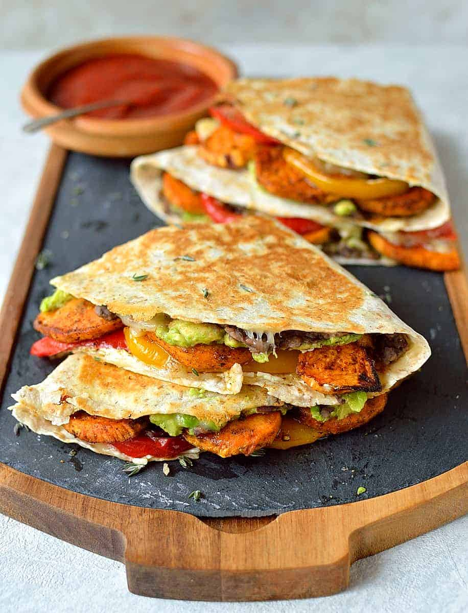
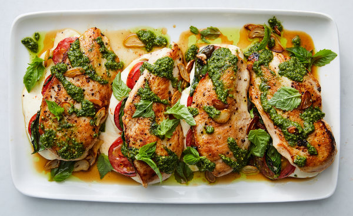

A healthy lifestyle can help you thrive throughout your life.
Making healthy choices isn't always easy. It can be
hard to find the time and energy to exercise regularly or
prepare healthy meals. However, your efforts will pay off
in many ways, and for the rest of your life.
Easy and Healthy Meals for Breakfast, Lunch, and Dinner
Meal planning can be very helpful when trying to eat healthy.
Having a list of go-to meals that are both nutritious and easy to
make can save you time and money, especially when the recipes use
pantry staples or long-lasting ingredients that you likely have on hand.
Breakfast
 Overnight oats are an easy breakfast option that requires no prep time in the morning.
Plus, they’re made with basic ingredients that won’t break the bank.
Overnight oats are an easy breakfast option that requires no prep time in the morning.
Plus, they’re made with basic ingredients that won’t break the bank.
Oats are also a good source of beta glucan fiber, which may help lower your cholesterol levels and reduce your risk of heart disease.
There are tons of overnight oat recipes on the internet, but I especially like these basic banana overnight oats.
Avocado toast can be a nutritious breakfast, as avocados are a good source of healthy fats and very filling.
Start with a toasted slice of 100% whole grain, rye, or sourdough bread. In a small bowl, smash together half of an avocado with some lime or lemon juice. Spread this on top of the toast.
For a protein boost, add one or two eggs, or smash white beans into the avocado for a vegan option. Top with crumbled cheese, chopped nuts, seeds, baby greens, or cherry tomatoes.
Start with a toasted slice of 100% whole grain, rye, or sourdough bread. In a small bowl, smash together half of an avocado with some lime or lemon juice. Spread this on top of the toast.
For a protein boost, add one or two eggs, or smash white beans into the avocado for a vegan option. Top with crumbled cheese, chopped nuts, seeds, baby greens, or cherry tomatoes.
Eggs are an excellent source of protein, as well as several vitamins and minerals that are important for health.
Make this 12-serving egg bake in advance, and enjoy nutritious leftovers all week long for hassle-free mornings.
It’s a reader favorite on my recipe blog and highly customizable. Feel free to add sliced bell peppers, chopped spinach, or mushrooms, and sub any type of cheese or milk you have on hand.
Make this 12-serving egg bake in advance, and enjoy nutritious leftovers all week long for hassle-free mornings.
It’s a reader favorite on my recipe blog and highly customizable. Feel free to add sliced bell peppers, chopped spinach, or mushrooms, and sub any type of cheese or milk you have on hand.
Lunch
Pasta salad can be a balanced, nutritious meal. It’s often made with cooked pasta, non-starchy
vegetables, and meat, cheese, or beans. Plus, pasta salad is served cold and keeps well in the fridge and lunch boxes.
Check out this Italian pasta salad for a healthy, affordable option. Add diced chicken, mozzarella cheese, or white beans for some protein, and use 100% whole wheat pasta for extra fiber. The olive oil in the dressing is also loaded with heart-healthy monounsaturated fats.
Check out this Italian pasta salad for a healthy, affordable option. Add diced chicken, mozzarella cheese, or white beans for some protein, and use 100% whole wheat pasta for extra fiber. The olive oil in the dressing is also loaded with heart-healthy monounsaturated fats.
Taco or burrito bowls make a healthy lunch that’s easy to assemble.
Prepare the ingredients ahead of time, store them in separate containers in the fridge, and assemble your bowl when you’re ready to eat.
The healthy fats in the avocado will help you absorb more fat-soluble nutrients, such as the vitamin A carotenoids in sweet potatoes, from the meal.
Prepare the ingredients ahead of time, store them in separate containers in the fridge, and assemble your bowl when you’re ready to eat.
The healthy fats in the avocado will help you absorb more fat-soluble nutrients, such as the vitamin A carotenoids in sweet potatoes, from the meal.

Veggie quesadillas are one of the easiest recipes to make, and they’re a good way to get kids
to eat more veggies. Eating vegetables is linked to a lower risk of disease and longer life.
You can use sliced onions and peppers, or any kind of leftover roasted or sautéed veggies that you have on hand.
lace a flour or corn tortilla in a skillet over medium heat. Sprinkle one half with shredded cheese, then add veggies and more cheese on top. Cook it for a few minutes, with the lid on the skillet, until the cheese is melted.
Fold the half of the tortilla without cheese over the other half. Remove it from the skillet, slice it into pieces, and enjoy it with guacamole, salsa, or sour cream. Feel free to add beans or chicken for more protein.
You can use sliced onions and peppers, or any kind of leftover roasted or sautéed veggies that you have on hand.
lace a flour or corn tortilla in a skillet over medium heat. Sprinkle one half with shredded cheese, then add veggies and more cheese on top. Cook it for a few minutes, with the lid on the skillet, until the cheese is melted.
Fold the half of the tortilla without cheese over the other half. Remove it from the skillet, slice it into pieces, and enjoy it with guacamole, salsa, or sour cream. Feel free to add beans or chicken for more protein.
Dinner

For a delicious meal that’s on the table in 30 minutes, try chicken breasts made with
caprese salad ingredients — tomatoes, mozzarella, and basil.
This recipe includes instructions for making them in a single skillet. Make some pasta while they cook — or better yet, ahead of time — and you’ll have a balanced meal in no time.
The chicken provides filling protein. Plus, tomatoes are a source of lycopene, an antioxidant compound that boosts heart health.
This recipe includes instructions for making them in a single skillet. Make some pasta while they cook — or better yet, ahead of time — and you’ll have a balanced meal in no time.
The chicken provides filling protein. Plus, tomatoes are a source of lycopene, an antioxidant compound that boosts heart health.
Mac and cheese is always a crowd-pleaser, and adding veggies to it brings the nutrition up a notch.
Making mac and cheese from scratch also means that you can control the ingredients and avoid excess sodium or unnecessary additives.
This healthy mac and cheese is kid-friendly and features both zucchini and cauliflower. It contains carbs from pasta, vitamins and minerals from veggies, and protein and fat from the cheese.
Making mac and cheese from scratch also means that you can control the ingredients and avoid excess sodium or unnecessary additives.
This healthy mac and cheese is kid-friendly and features both zucchini and cauliflower. It contains carbs from pasta, vitamins and minerals from veggies, and protein and fat from the cheese.
Figuring out how to add more fish to your diet can be intimidating, but this recipe using
canned salmon makes it a lot easier.
Salmon is one of the best sources of omega-3 fatty acids in the diet. Omega-3s help boost brain health and prevent heart-disease-linked plaque buildup in the arteries.
Besides the salmon, these burgers have very basic ingredients and are easy enough for even the busiest of nights. Plus, they’re served over a cabbage slaw that counts as your veggies for the meal.
Salmon is one of the best sources of omega-3 fatty acids in the diet. Omega-3s help boost brain health and prevent heart-disease-linked plaque buildup in the arteries.
Besides the salmon, these burgers have very basic ingredients and are easy enough for even the busiest of nights. Plus, they’re served over a cabbage slaw that counts as your veggies for the meal.
Snacks
 Bars make the perfect grab-and-go snack for busy days. But not all bars are created equal
— many bars masquerading as healthy can actually deliver as much sugar as a candy bar.
Bars make the perfect grab-and-go snack for busy days. But not all bars are created equal
— many bars masquerading as healthy can actually deliver as much sugar as a candy bar.
Whether you make them yourself or buy them, choose ones that are made mostly from whole foods, contain 5g or less added sugar, and contain a mix of protein, fiber, and healthy fats.
 These tiny seeds have big health benefits. Just one ounce of chia seeds (about 2 tablespoons)
contains 9 grams of unsaturated fat (including some omega 3's), 11g of fiber, 4g of protein,
and are a good source of calcium, magnesium, and phosphorus, along with many antioxidants.
The high fiber content may also help balance blood sugar, promote gut health, and reduce
risk for cardiovascular disease.
These tiny seeds have big health benefits. Just one ounce of chia seeds (about 2 tablespoons)
contains 9 grams of unsaturated fat (including some omega 3's), 11g of fiber, 4g of protein,
and are a good source of calcium, magnesium, and phosphorus, along with many antioxidants.
The high fiber content may also help balance blood sugar, promote gut health, and reduce
risk for cardiovascular disease.
Chia seeds create a tapioca pudding-like texture when mixed with liquid, making them a snack that can feel like dessert. There are dozens of flavor combinations, so get creative or try one of our favorites such as Chai Chia Pudding, Apple Cinnamon Chia Pudding or Mango Coconut Chia Pudding
Need an afternoon mood boost? Grab a handful of walnuts. A recent study showed walnut eaters
may have lower rates of depression and other research suggests they may improve your mood.
While all nuts (and seeds) make a healthy snack, "walnuts stand out because they're the only
tree nut that is an excellent source of the omega-3 fatty acid ALA," says Cassetty. They
also contain fiber and protein, providing all that you need to stay satisfied between meals.
Cassetty recommends making trail mix with walnuts and dried fruit. If you crave chocolate in the afternoon, Lauren Manaker, M.S., RDN, LD has you covered with one of her favorite snacks — walnuts dipped in dark chocolate (yes please!). "Since both walnuts and chocolate contain magnesium, this is a great treat that also supports your bone health and mood," says Manaker. Try these healthy homemade trail mixes with dried fruit, nuts, seeds and yes, chocolate.
Cassetty recommends making trail mix with walnuts and dried fruit. If you crave chocolate in the afternoon, Lauren Manaker, M.S., RDN, LD has you covered with one of her favorite snacks — walnuts dipped in dark chocolate (yes please!). "Since both walnuts and chocolate contain magnesium, this is a great treat that also supports your bone health and mood," says Manaker. Try these healthy homemade trail mixes with dried fruit, nuts, seeds and yes, chocolate.